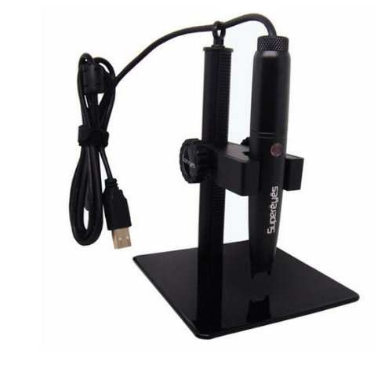
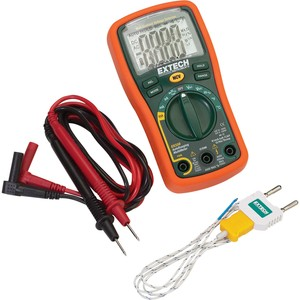

La familia de AETEL crece. Tanto en socios, como incrementando las herramientas que estan disponibles. Somos una asociación donde se construye, comparte y enseña, por lo que pasito a pasito generamos un ambiente; una comunidad. Disponemos de un amplio equipamiento y también de aire acondicionado, para esos dias calurosos del verano en Madrid.
Un recordatorio: Entre todos debemos cuidar y proteger todo el material que compartimos. Así durará muchos usos. Y ahora ¡vamos con las adquisiciones!
Microscopio SuperEyes B008

Seguro que has sentido alguna vez que tus ojos no daban más de sí a la hora de soldar. O en alguna ocasión querías ver el nombre de un chip en un encapsulado SSOP. Para esos problemillas está esta solución.
Este microscopio se instala fácilmente por conector USB. Utiliza un software de PC con constantes actualizaciones (actualmente la version 3.54). Dispone de 500 aumentos y la posibilidad de realizar capturas de vídeo sin saltos aparentes. También hemos probado la opción de hacer fotografías y nos ha gustado mucho.
Multímetro EX330

Multímetro de mano. Pequeño y con muy buena precisión. Posee un rango amplio de medidas, incluyendo medidas de condensadores y también una sonda de temperatura; para esos días del mes en los que no te fías de tu termostato.
Fue galardonado en el blog que todo electrónico debería respetar y conocer: EEVblog (Electronic Engineering Video Blog), del carismático Dave Jones.
Soldador con control de temperatura GOOT PX-201

Existen multitud de estaños, fabricantes y aleaciones. No solo se diferencian en la calidad, sino que a veces es necesario ajustar la temperatura y necesitas para ello una herramienta de calidad.
Hay personas que encuentran el sustituto perfecto a una estación de soldadura. Nosotros pensamos que, como ya tenemos una, serán muy buenos amigos.
También se ha adquirido una punta adicional para trabajos en SMD. Podeís googlear sobre el modelo GOOT PX-2RT-2.4D e investigar lo sencillo que es reemplazarla.
Mesa de trabajo electrónico AOYUE 328
¿Cuántas veces has necesitado la tercera mano para soldar? Y si encima se trata de un componente SMD es imposible colocarlo de ninguna manera. Ni con un Máster del universo. Con este soporte, con flux, soldador y estaño, ninguna placa en montaje superficial debería resistirse.
Placas Fotosensibles Bungard
Con acceso a un laboratorio, con insoladora, líquidos contaminantes y unas batas muy monas solo necesitamos unas placas sensibilizadas de calidad. Estamos seguros de que os habréis encontrado con placas de baja calidad que a la hora del proceso químico del atacado se haya comido todo el cobre. Un momento de desesperación.
Por esta razon hemos comprado placas de la marca Bungard. Con las placas Bungard no hemos tenido nunca ese incidente y, dado que se utilizan mucho, hemos pedido al por mayor. ¡Nos encanta que brille el cobre!
Brocas, Protoboard y limpiador de puntas.
En la asociación no pueden faltar recambios para nuestro taladro de mesa, ni breadboards para que investigues con arduino. Ni por supuesto, que tengas la excusa de dejar el soldador sucio.
Bueno, esto ha sido todo amigos y con un discurso paternalista: quien lo rompe, lo paga. :-))